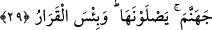
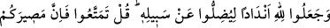
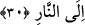

29. Onlar cehenneme girecekler. O ne kötü karargâhtır!
“Onlar cehenneme girecekler.” Sıcaklığına mâruz kalacakları cehenneme girecekler.
“O ne kötü bir duraktır” yâni cehennem ne kötü bir karar kılma yeridir.
30. (İnsanları) Allah yolundan saptırmak için O’na ortaklar koştular. De ki:
(İstediğiniz gibi) yaşayın! Çünkü dönüşünüz ateşedir.
İnsanları “Allah yolundan saptırmak için” sapıklıkları ölçüsünde kendilerine tâbi
olan kavimlerini Allah’ın dosdoğru yolu olan tevhîdden saptırmak ve onları inkâr ve
dalâlet vartasına düşürmek için “O’na” ne gökte ve ne yerde hiçbir ortağı bulunmayan
O yegâne tek ve bir olan Allah’a sâdece ismen benzeyen “ortaklar koştular.” Çünkü
putları ilâhlar diye adlandırıyorlardı.
Ya da kulluk edilme konusunda putları O’na benzettiler. Bunu kendi bozuk düşünceleri
ve boş inançlarına göre yaptılar. Kavimlerini saptırmak, ileri gelenlerin Allah’a eş
koşmaktaki gerçek maksadları değildi. Ne var ki kavimlerinin sapması ortak
koşmalarının netîcesi olduğu için (dolaylı saptırma) maksada benzetilmiş ve gerçekte
Allah’ın bir fiili olan saptırma ileri gelenlere isnâd edilmiştir. Çünkü dalâleti emredip
ona dâvet edenler onlar olduğundan kavimlerinin inkârlarına sebebiyet verenler de
kendileri olmuştur.
Hem kendileri sapmış olan hem de başkalarını saptıran bu kimseleri tehdîd ederek
“de ki:” biraz daha istediğiniz gibi “yaşayın!” aralarında bunca büyük nîmete
nankörlük etmenin ve putlara kulluk etme husûsunda insanları peşinden sürüklemenin de
bulunduğu bir takım nefsânî isteklerinizden istifâde etmeye devam edin. Ömürlerinizi
kendi arzularınız peşinde koşup putlara tapınmakla geçirin. “Çünkü” kıyâmet günü
“dönüşünüz ateşedir” başka bir şeye değildir. O halde gideceğiniz yerin cehennem
olmasına sebeb olacak hal, tutum ve davranışlardan kesin olarak kaçınmanız gerekiyor.
Bu iki âyet bazı hususlara delâlet etmektedir:
1- Şükür nîmetlerin artmasına sebep olduğu gibi nankörlük de nîmetlerin tamâmen yok
olmasına sebeptir.
Nîmete şükür, sana verilen nîmeti artırır
Nîmete küfür, verilmiş nîmeti elden çıkarır